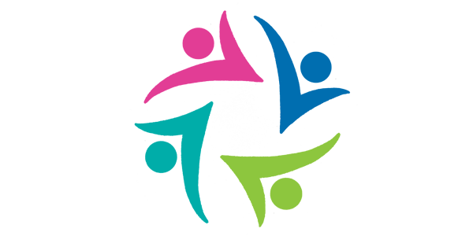

“Despertar o amor e a consciência através do cuidado humanizado."
Este é o lema da Clínica Criança, que surgiu do sonho da Enfermeira Obstetra Kelli Gil Zamignan.
A história começa há alguns anos atrás, no ano de 2012, quando a Enfermeira Kelli se formou pela Universidade Federal do Mato Grosso. Durante sua formação, sempre se identificou com a área da saúde da criança e em especial na área da terapia em pediatria.
Mais tarde, veio a entender o tão forte sentimento de amorosidade pela pediatria. Descobriu então, o trabalho de enfermeiras que passava de geração em geração em sua família. Tudo teve início com sua bisavó materna, Antônia Maschio de Campos, seguindo sua avó materna, Juracy Campos da Silva. Ambas trabalharam por muitos anos como enfermeiras locais em áreas rurais.
Posteriormente, sua tia materna, Maria Das Dores da Silva, trabalhou por vários anos na maternidade cuidando dos recém nascidos. Dando sequência a essa linhagem, em 2015, finalizou sua especialização em Pediatria, e em 2016, o curso de Doula e Educadora. Desde então, iniciou sua história na terapia para pequenos.
Junto a esta formação, despertava o sonho de ter um espaço próprio, em que os profissionais que atuassem nele compartilhassem deste mesmo amor pelas crianças. Um espaço para atender não somente os pequenos, mas proporcionando-lhes assistência integral, personalizada e humanizada.
Em outubro de 2018, este sonho concretizou-se com a inauguração da Clínica Criança: A vida em Equilíbrio. Um centro especializado em despertar o amor e a consciência através do cuidado humanizado.
A Clínica tem como objetivo ser reconhecida pela qualidade em assistência à saúde, compartilhamento de conhecimento com as crianças e pelo acolhimento afetuoso em todas as áreas de atuação.
Na Clínica Criança, não se trabalha de forma individualizada, em que cada profissional entra para a sua sala, atende o seu paciente e vai embora. Existe conexão! Considera-se que todo cuidado deve ser completo. Todos os profissionais compartilham da mesma filosofia, e estão dispostos a compartilhar o conhecimento para que o paciente tenha os cuidados que precisa.
“Não adianta unicamente ter diplomas afixados nas paredes. É indispensável humanismo na prática diária”.